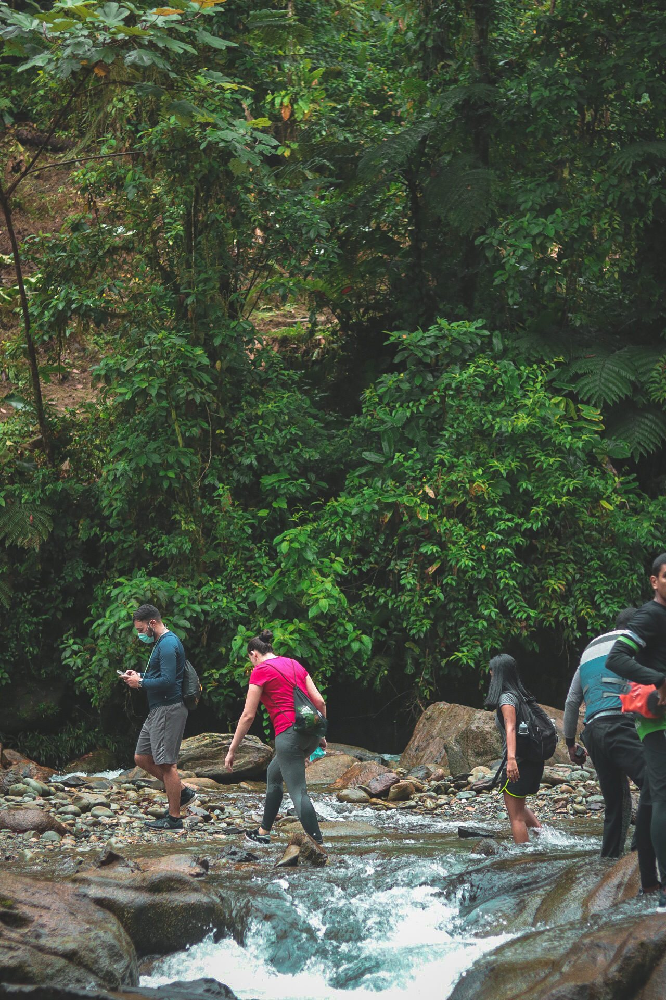
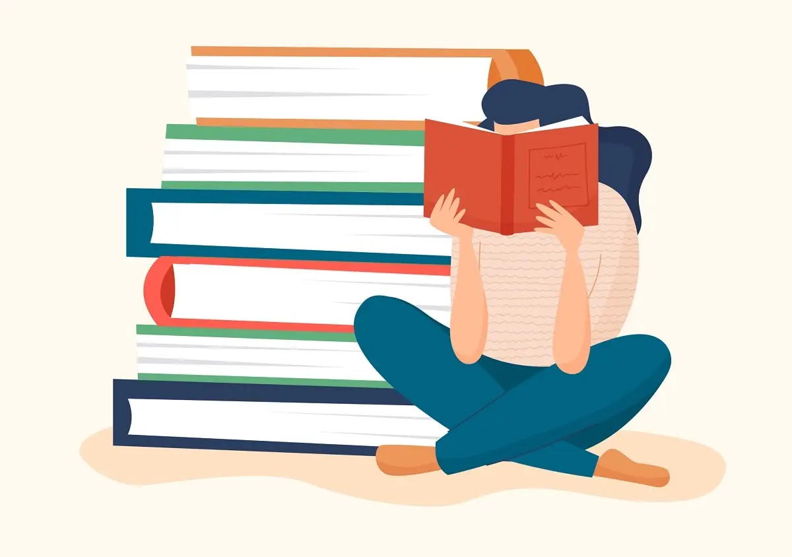
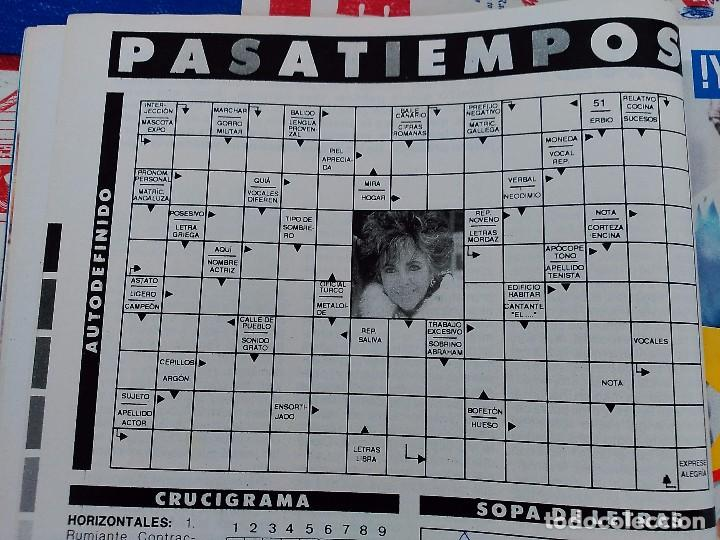

Pasatiempos




Me gusta practicar hiking, nadar en ríos, prefiero los destinos de agua dulce.
Una de mis actividades favoritas que hago durante las vacaciones es leer. Me gustan los libros de politica.
Siempre me pido el crucigrama de los periódicos, así sea el Q'hubo.
Me la pasaría días enteros viendo películas.